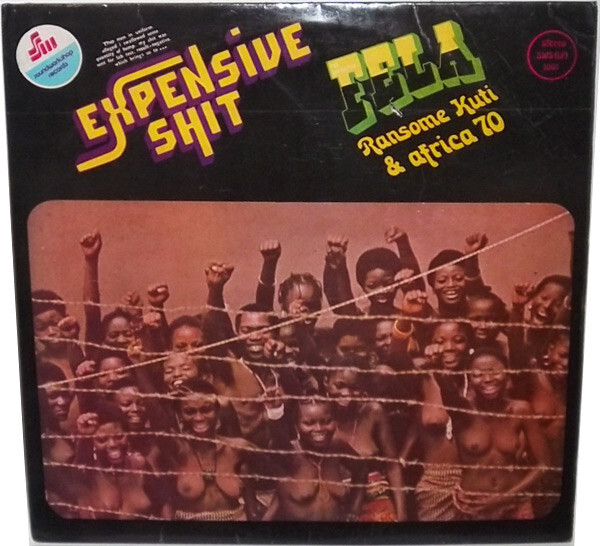
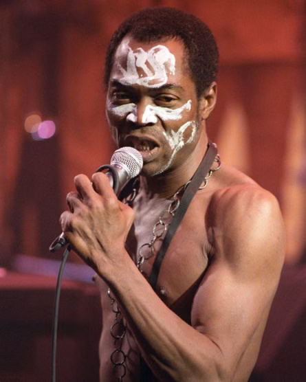

“Water No Get Enemy”
01 — La canción
“Water No Get Enemy” es la cara filosófica de Expensive Shit. Frente a la rabia del tema que da nombre al álbum, aquí Fela baja la voz para una reflexión: el agua no tiene enemigos.
El proverbio yoruba se vuelve metáfora política y espiritual: así como nadie sobrevive sin agua, un pueblo es la fuerza vital de una nación. Fela canta mezclando yoruba y pidgin English, el inglés criollo de África Occidental con el que llegaba a toda la audiencia panafricana.
Musicalmente es Afrobeat puro: jazz, funk, highlife y ritmos yoruba sobre un groove sin fin. Un saxofón abre el tema, la sección de vientos dialoga con el coro en un riff con sabor latino, y sobre todo eso Fela suelta uno de sus solos de teclado más recordados.

02 — El artista

Olufela Olusegun Oludotun Ransome-Kuti (Abeokuta, Nigeria, 1938 – Lagos, 1997) fue multiinstrumentista, compositor y activista: el creador del Afrobeat.
Venía de una familia notable. Su madre, Funmilayo, fue una feminista y activista anticolonial legendaria —primera mujer en conducir un carro en Nigeria—; su padre, un ministro anglicano y líder sindical de maestros. Era además primo del Nobel de Literatura Wole Soyinka.
Lo enviaron a Londres a estudiar medicina, pero se matriculó en el Trinity College of Music. Allí formó Koola Lobitos (jazz + highlife). De vuelta en Nigeria, y tras una gira por EE. UU. en 1969 —donde lo marcaron Malcolm X y los Panteras Negras—, su música se volvió abiertamente política.
03 — Fela como músico
Fela era un multiinstrumentista total: saxofón (tenor y alto), teclados y órgano, trompeta, guitarra y hasta batería. Formado en música clásica, dirigía su orquesta como un director de jazz.
Su banda, Africa 70, tenía en la batería a Tony Allen, quizá el baterista más influyente del género: sin él, dijo Fela, "no habría Afrobeat". Juntos definieron el groove sin fin: una base hipnótica que se repite y crece durante 10, 15 o hasta 30 minutos, dando espacio a solos largos y a los discursos.
Detalles de su sonido: usaba dos saxofones barítonos para engrosar los vientos (algo raro), y tenía una regla casi ritual: nunca tocaba en vivo una canción que ya había grabado. Cada show en su club, el Afrika Shrine, era único: mitad concierto, mitad ceremonia.
04 — Su aporte a la música
Fela no solo tocó Afrobeat: lo creó y le puso nombre. Es una fusión de highlife y ritmos yoruba con el jazz y el funk de EE. UU., cargada de percusión, secciones de vientos y llamada-respuesta, con letras de protesta en pidgin English.
05 — Arte y política
Para Fela, la música era un arma contra la corrupción y la dictadura militar. Ese arte lo llevó, una y otra vez, a la cárcel.
06 — El disco
Grabado en 1975 con Africa 70. El título nace de una historia real y absurda.
La policía, buscando cómo incriminarlo, le plantó un porro. Fela se lo tragó. Lo detuvieron a la espera de "la prueba" en sus heces; según la leyenda, en la celda intercambiaron la muestra y salió limpio. De ahí el nombre: "Expensive Shit", la mierda cara.
La cara A es esa denuncia sarcástica al acoso policial. La cara B, "Water No Get Enemy", es el respiro filosófico. Dos caras del mismo Fela: la furia y la sabiduría.
07 — Instrumentos y familias
Africa 70 era una orquesta grande. Estos son los músicos acreditados en la grabación, agrupados por familia instrumental.
08 — Tipos de voces
Afrobeat funciona por llamada y respuesta (call & response): una voz líder lanza la frase y el coro contesta.
Fela (voz líder): canta en un registro de tenor, con un timbre nasal y declamatorio, casi de pregón, y remates agudos. Más que "cantar" melodías, narra y arenga.
Coro (respuesta): voces femeninas de sus coristas, en el rango de mezzosoprano / contralto, que repiten y responden el estribillo con fuerza rítmica.
Nota: la clasificación de registros es una lectura de oído, no una ficha oficial.
09 — Tempo y métrica
Un mid-tempo firme y bailable, en compás de cuatro por cuatro. La armonía casi no se mueve: un vamp sobre uno o dos acordes menores que sostiene el groove durante los 11 minutos.
10 — Partes de la canción
La estructura es la del Afrobeat clásico: un largo desarrollo instrumental antes de que entre la voz. Tiempos aproximados — ajústalos escuchando tu archivo mientras presentas.
11 — Espacialidad · plano estéreo y paneos
Basado en The Art of Mixing de David Gibson: cada instrumento es una esfera en un "cuarto" estéreo. Su posición horizontal es el paneo (izq. ↔ der.), su altura es el registro (agudos arriba, graves abajo) y su tamaño es el volumen. Al reproducir, las esferas laten con el audio real de su pista. Con los botones de arriba (o clic en una esfera) aíslas o silencias cada stem de la grabación.
Suena la canción real reconstruida desde 4 stems (batería, bajo, melódicos, voces). Los stems conservan el paneo original de la grabación. "Melódicos" junta guitarras, teclado y vientos (con 4 stems no se separan más). La primera reproducción tarda unos segundos en cargar el audio.
Lectura interpretativa de una grabación de 1975 (imagen estéreo bastante centrada, típica de la época). Percusión y bajo anclan el centro-grave; guitarras y congas se abren a los lados para dejar el centro a la voz, los solos y los vientos.